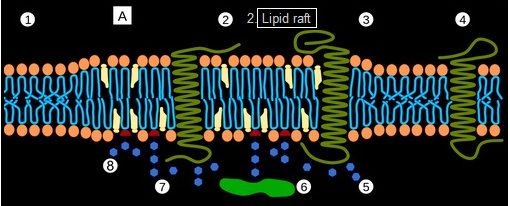
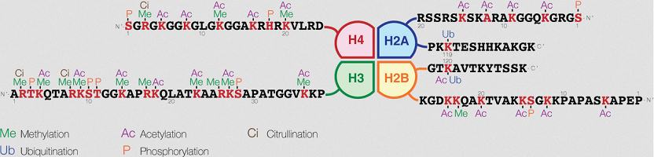
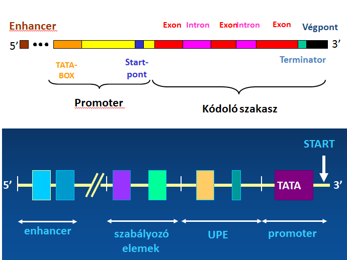
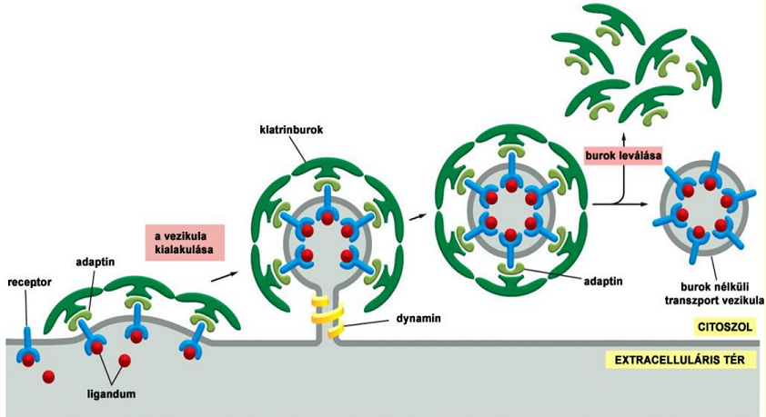
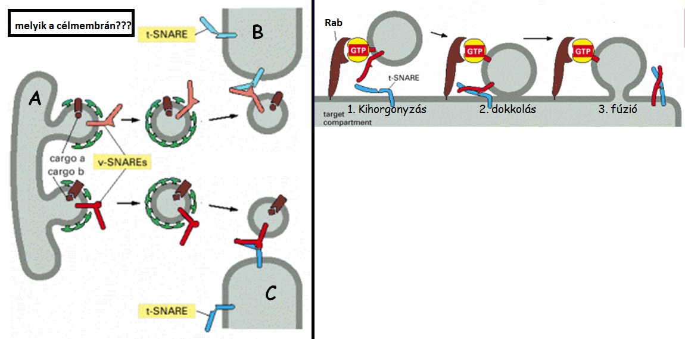
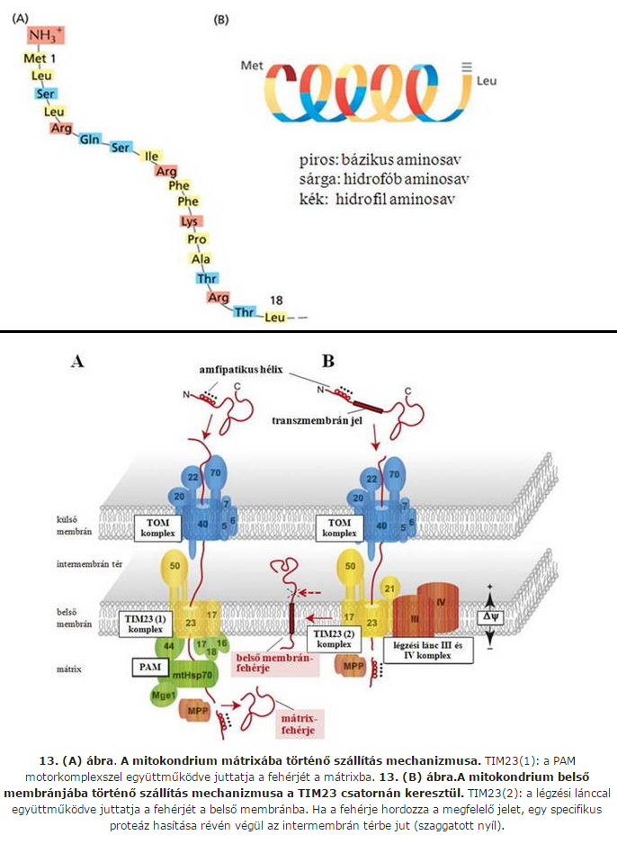
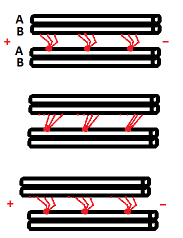

elmélet
1. A sejt az élet alapegysége. Élet keletkezési elméletek, a sejtes szerveződés. A pro- és az eukarióta sejt.
Élet keletkezési elméletek, a sejtes szerveződés.
✽élétkeletkezési elméletek ➜ felsorolás?
- spontán
- pánspermia
- Oparin-elmélet
spontán keletkezési elmélet ➜ származása? lényege?
- Arisztotelész vetette fel
- pl. Húsokon „megteremtek” a legyek / szennyvízben és szemétben „megteremtek” a patkányok
spontán keletkezési elmélet ➜ megdöntése?
pánspermia-elmélet ➜ lényege?(1) "hibája"?(1)
- Földön kívül keletkezett az élet, pl. meteoriton keresztül jött ide
- "hiba" ➜ nem magyarázza az élet keletkezését
Oparin-elmélet ➜ lényege?(1)
- az élő rendszerek élettelen kémiai anyagokból keletkezhettek a Földön
Miller-kísérlet ➜ mit igazol? lényege?
- igazolja, hogy biológialag fontos molekulák (pl. aminosavak) abiogén úton (nem volt élõ rendszerre szükség hozzá) is létrejöhettek
- lényege ➜ bal alsó "õsóceán" lombik forralása + fölötte õslégköri gázok ➜ csövön eljutva elektródák elektromos kisülései (szimbolizálva villám stb.) hatnak rájuk ➜ 2hét után keletkeztek molekulák (aminosav)
- (szvsz Oparin-elméletre egy bizonyítás de mind1)

Kémiai evolúció, a légkör eredete.
légköri oxigén eredete?
- 47-48.bevezetés.pdf
sejtmembrán létrejötte.
főként mik alkotják a sejtmembránt?
- foszfolipidek
foszfolipidek miért alkalmasak membránalkotásra?
- farok részük apoláris ➜ két zsírsav része
- fej részük poláris ➜ ✽ glicerin+foszfát+N(pl.kolin) molekularészlet
- fej részük hidrofil(vízkedvelő,"vonzódik felé") / farok része hidrofób(víztaszító)
- poláris közegben(pl. víz) eldugják, egymás felé fordítják farok részük, fej részük pedig a víz felé fordul
~~~~~~~~~~~~~~~~~~~~~~~~~~~~~~~~~~~~
A pro- és az eukarióta sejt.
eukarióta sejt eredete ➜ elmélet neve, mely magyarázza? kinek a nevéhez fűződik?
- endoszimbionta-elmélet
- Lynn Margulis
endoszimbionta-elmélet lépései?
- heterotróf prokarióta sejtek számára előny a nagy méret
- így idővel megnőttek
- közben elvesztették sejtfalukat
- betüremkedések is közben egyre nőttek (különben relatív felületük csökkent volna, és ez a környezettel való anyagcserét gátolná)
- betüremkedések leszakadtak belül és így kialakult ➜ ER, magmembrán, lizoszóma, Golgi
- emelett más prokarióták bekebelezésekor, néhánnyal szimbiózis alakult ki ➜ mitokondrium
endoszimbionta-elmélet bizonyítékai?
- kettős membránja van ➜ mitokondrium, magmembrán
- mitokondrium van csak önálló (ráadásul "bakteriális", azaz gyűrű alakú) DNS a sejtszervecskék közül ➜ sejtmagtól függetlenül képesek szaporodni
mely molekula konzervált az sejtes életformában? mire bizonyíték?
prokarióta vs eukarióta(nyisd meg!)
| prokarióta | eukarióta |
|---|---|
DNS?gyűrű alakú➜ ➜ ()kromoszómákat alkotnak
| |
sejtmag?nincs✽➜ ➜ kettős magmembránnal elválasztott sejtmag van
| |
szaporodás?osztódás➜ ➜ mitózis / meiózis
| |
méret(általános)?~2μm✽➜ ➜ ~10μm✽
| |
belső membránrendszer?nincs, így sejtszervecske sincs➜ ➜ van, és sejtszervecske is
| |
kialakulásuk mikor?~4milliárd éve➜ ➜ ~2milliárd éve
| |
2. A sejtmembrán felépítése és működése.
általános.
felépítésének alapja? fő alkotói?
foszfolipidek miért alkalmasak membránalkotásra?
- farok részük apoláris ➜ két zsírsav része
- fej részük poláris ➜ glicerin+foszfát+N(pl.kolin) molekularészlet
- fej részük hidrofil(vízkedvelő,"vonzódik felé") / farok része hidrofób(víztaszító)
- poláris közegben(pl. víz) eldugják, egymás felé fordítják farok részük, fej részük pedig a víz felé fordul
~~~~~~~~~~~~~~~~~~~~~~~~~~~~~~~~~~~~
zsírsav fő típusai foszfolipidekben?(3)
- palmitinsav
- sztearinsav
- olajsav
foszfolipidek általános felépítése?
lipidkomponensek fő típusainak felsorolása?
- foszfolipidek
- koleszterin
- glikolipidek
foszfolipidkomponensek fő típusainak felsorolása?
- foszfatidil-kolin
- foszfatidil-szerin
- foszfatidil-etanolamin
- szfingomielin
koleszterin ➜ felépítése? elhelyezkedése? funkciója? mennyisége?
mi a raft?
- raft ➜ egyes részein vastagabb a membrán 
glikolipidek hol helyezkednek el?
membránalkotók "mozgáslehetőségei"?
| mozgásforma | foszfolipid | membránfehérje |
|---|---|---|
| laterális diffúzió | képes | képes |
| rotáció | képes | képes |
| flexió | képes | képtelen |
| flip-flop | nagyon ritka () | képtelen |

membránfehérjék csoportosítása kapcsolódás alapján?
’Multidrog rezisztencia protein’ ➜ mi? funkció? előfordulásra pl?
glikokalix.
szerkezete?
funkciója?
- mechanikai és kémiai védelmet nyújt
- sok vizet képes megkötni
membrántranszport folyamatok.
típusai? tulajdonságaik?
| egyszerű_diffúzió | transzport | ||
|---|---|---|---|
| passzív = facilitált_diffúzió | aktív | ||
| transzportfehérjét NEM igényel | transzportfehérjét igényel | ||
| csatorna-fehérje | transzporter-fehérje | transzporter-fehérje | |
|
alapja diffúzió ➜ nem igényel energiát
csak koncentrációkülönbség alapján ↔ koncentráció és töltéskülönbség alapján |
energiaigényes | ||
egyszerű diffúzióval mik jutnak át és mik nem?
- átjutnak ➜ apoláros molekulák (oxigén, lipid) + kis poláros molekulák (víz)
- nem jutnak át ➜ ionok + nagy poláros molekulák
transzportfehérjék típusainak felsorolása?
| transzportfehérjék !!!!!!!!! | |
|---|---|
| csatorna | karrier (hordozó,transzporter) |
kötés az átjutó anyag és transzportfehérje között...nem jön létre ||||||||||||| létrejön | |
átjuttatás módja?fehérje belsejében lévő csatornán diffúzióval átjut az anyag ||||||||||||| membrán másik oldalára "átpumpálja és elengedi" | |
transzportfehérje szerkezetével mi történik?nem változik meg ||||||||||||| megváltozik a folyamat során | |
folyamat sebessége?gyorsabb ||||||||||||| lassabb | |
milyen transzportra képes(passzív/aktív)?csak passzív ||||||||||||| passzív / aktív | |
kerrier aktív/passzív transzportjára 1-1 példa?
- passzív ➜ pl. glükóz felszívás bélhámsejtekben
- aktív ➜ pl. Na-K-ATP-áz
csatorna-fehérjékre 2példa?
- akvaporinok
- ioncsatornák
primer/szekunder transzport mi?
- aktív-transzport, melynél az energiaszükséglet fedezi
- primer ➜ ATP
- szekunder ➜ ionkoncentráció-kiegyenlítődés fedezi
aktív-transzport csoportosítása "molekulaszállítás-alapján"?
Na-K ➜ milyen transzport?
- ATP fedezi energiát ➜ primer aktív-transzport
- antiport ➜ 3Na-t sejtből kipumpálja / 2K-t bepumpálja sejtbe a kerrier-fehérje
vízpórusok.
szaknyelven?
- akvaporinok
mik?
- csatorna-fehérjék ➜ 6szor érik át a membránt
csoportosításuk?
- csak vizet enged át
- pár egyéb dolgot is (pl.glicerin,urea)
3. A sejtmag felépítése és működése.
általános
sejtmag latinul?
- nucleus
sejtmag evolúciójának elmélete?
prokarióták sejtmagja?
- nincs magmembrán ➜ gyűrű-alakú DNS ott van a citoplazmában
"betüremkedés-leszakadás" ➜ mik jöttek így létre?(4)
- magmembrán, ER, lizoszóma, Golgi
sejtmag funkció?
- transzkripció
- replikáció
- magtranszport
sejtmag szerkezete?
- magmembrán
- nukleoplazma
- nucleolus
- pars_amorpha
- pars_fibrosa
- pars_granulosa
- kromatin
- eukromatin
- heterokromatin
- konstitútív
- fakultatív
- interkromatin
- nukleoszol
➜ víz, stb. ➜ folyadékállomány
- nukleáris_mátrix
- nukleoszkeleton = ➜ ez adja a vázat
- lamina_fibrosa
- intranukleáris_filamentumok
- (nukleáris testek)
- (makromolekuláris testek)
sejtmagot milyen molekulák alkotják és milyen arányban?(pl. szénhidrátok 1:2 fehérjék)
- DNS 50% : 50% fehérjék
génexpresszió mi?
- transzkripció + transzláció együtt
magmembrán
magmembrán alapfelépítése?
- kettős membrán alkotja, köztük perinukleáris tér
- külső/belső rétegnek eltérő komponensei vannak, így szerkezetük és funkciójuk is más
- nem folyamatos a kettős membrán ➜ magpórusok szakítják meg
kettős membrán hány lipidréteg?
- 4
külső magmembrán ➜ felépítése? funkciója?
belső magmembrán funkciója?
magpórusok száma/sejtmag?
- 2000-3000db
magpórust alkotó molekulák?
- nukleoporinok alkotják (kb. ~30féle fehérje)
magpórus szerkezete?
magpórus 8alegységén mik juthatnak át és hogy?(LP)
- ionok,kismolekulák,monomerek diffúzióval
nukleoszkeleton
interkromatin felosztása?
- nukleoszol
➜ víz, stb. ➜ folyadékállomány
- nukleáris_mátrix
- nukleoszkeleton = ➜ ez adja a vázat
- lamina_fibrosa
- intranukleáris_filamentumok
- (nukleáris testek)
- (makromolekuláris testek)
nukleoszkeleton ➜ felosztása? mi alapján?
- lamina_fibrosa ➜ belső magmembránhoz kapcsolódva
- intranukleáris_filamentumok ➜ mag belsejében van
lamina_fibrosa ➜ milyen típusú váz? alkotói és azok funkciói?
- lamin A/C ➜ kromatinhoz kapcsolja
- lamin B ➜ belső_magmembránhoz kapcsolja
intermedier_filamentum ➜ alkotói a lamin nevű fehérjék
lamina_fibrosa funkció?(2)
- belső_magmembránt kapcsolja kromatinhoz
- magmembrán integritását biztosítja
- sejtosztódás elején a laminok foszforilációja megy végbe
- így a laminok szerkezete megváltozik és a magmembrán "eltűnik" (szétesik vezikulumokra)
- sejtosztódás végén azonban visszaáll ismét (defoszforiláció + összeáll a magmembrán)
kromatin
definíciója? mi alkotja?
- interfázisos (sejciklusban) kromoszóma ➜ DNS + hozzá kapcsolódó fehérjék
kromoszóma "felosztása" fázisonként?
- interfázisos_kromoszóma ➜ interfázisban (sejtciklus)
- metafázisos_kromoszóma ➜ mitózisban (sejtciklus)
alap felosztása?(2) ➜ funkció/szerkezet/EM képen?
heterokromatin ➜ típusai? jellemzésük (1szóval)?
- konstitutív ➜ transzkripció sosincs
- fakultatív ➜ ingerre átalakulhat eukromatinná (hiszton-acetiláció az inger?)
- ezenkívül perinukleáris_heterokromatin ➜ lamina_nuclearishoz kapcsolódva található
- fakultatív & konstitutív szemléltetésére egy hétköznapi példa ➜ pl. ha terhes a nő, akkor a tejmirigyek elkezdenek tejfehérjét termelni
- oka ➜ fakultatív_heterokromatin átalakul eukromatinná, terhesség után pedig visszaalakulnak
- férfiakban ez azonban mindvégig konstitutív
~~~~~~~~~~~~~~~~~~
~~~~~~~~csak olvasd el~~~~~~~~~~
kromoszómák helye interfázis során?
sejtmag fehérjéinek csoportosítása?
- hiszton
- non-hiszton
- vázalkotó fehérjék (scaffold-proteinek)
- kromatin szerkezetét módosító fehérjék
- génreguláló_fehérjék (=speciális_transzkripciós_faktorok) ✽
DNS szerveződés = kromatin kondenzálódás
kromatint hány DNS alkotja? (+fehérjék is ugye,de az most nemérdekes)
- 46db (1/kromoszóma)
mi a feladat?(DNS-hossz vs kromoszóma-hossz)
- DNS-ek hossza 2m ➜ eztkell elhelyezni 5-10μm átmérőjű sejtben
kromoszóma alapegységének neve?
- nukleoszóma
- /az eukromatin esetében is már nukleoszómára tekeredett a DNS! ➜ tehát kromatin alapegysége is/ ➜ ezt majd valahova elteszem
nukleoszóma ➜ felépítése? régiói?
- nukleoszóma áll 8db hisztonból ➜ H2A H2B H3 H4, mindegyikből 2db
- nukleoszómára a DNS 2x tekeredik fel
- DNS 2 régiója
- linker régió ➜ ~60 bázispár hosszú
- nukleoszómán lévő rész ➜ ~146-147 bázispár hosszú

hiszton fehérjék ➜ felsorolás & funkció?
- H2A H2B H3 H4 ➜ nukleoszómákat alkotják
- H1 ➜ nukleoszómákat kapcsolják össze ➜ kialakul a kromatin-szál = szolenoid (30nm átmérőjú)

"DNS-ből kromoszómába útvonal első 3 lépcsőfoka"?
- DNS
- kromatin-filamentum ➜ nikleoszómák
- kromatin-szál = szolenoid ➜ nikleoszómák + H1
hiszton módosítások
hol történnek?
módosítások típusainak felsorolása?
- acetiláció és deacetiláció
- metiláció
- foszforiláció
- ✽
/// módosítások mindegyike "kovalens-kötésű"
(de)acetiláció ➜ mi történik? funkció?
- acetiláció
- acetilcsoport -COCH3 adódik Klizin vagy Rarginin aminósavhoz
- funkció ➜ aktiválja az adott DNS-részt (tehát lefűzi) ➜ transzkripcióhoz kell
- deacetiláció pont az ellentetjét váltja ki ➜ kromatin kondenzálódik (visszafűződik) ➜ sejtosztódáshoz kell 
metiláció ➜ mi történik? funkció?
- metilcsoport CH3– adódik Klizin vagy Rarginin aminósavhoz
- funkció ➜ inaktívvá teszi a DNS-azon részét
foszforiláció ➜ mi történik? funkció?
- foszfátcsoport adódik Sszerin vagy Ttreonin aminósavhoz
- funkció ➜ kromatin átrendeződésben fontos
nucleolus
membránjának felépítése?
- nincs membránja
szerkezete ➜ funkció?
- felismerni NEM kell tudni őket!
| rész neve | rész funkció |
|---|---|
| A pars_amorpha | 45S pre_rRNS-szintézis |
| PF pars_fibrosa | pre_rRNS-átalakítás ➜ 1db 45S rRNS lebomlik 3db kisebb rRNS-re |
| PG pars_granulosa | 40S és 60S riboszóma_alegységet készít ➜ 3db kisebb rRNS-hez hozzákapcsolja a szabad_riboszómákban szintetizálódott majd beérkezett fehérjéket |
funkciója?
- rRNS-szintézis
- 2db riboszóma_alegység-szintézis ➜ rRNS + kaputranszporttal beérkezett fehérjéket "kombinálva"
- telomeráz(enzim)-szintézis
NOR micsoda?
- sejtciklus során interfázisban 3 része van a nucleolusnak ➜ pars amorpha / fibrosa / granulosa
- prometaphaseben nucleolus megszűnik ➜ rDNS-ek feltekerednek 5 kromoszómára
- NOR [Nucleolus organizer region] ➜ 5 kromoszóma azon része ahova feltekeredett a nucleolus
- tehát lényegében a nucleolus = interfázisos NOR
mely kromoszóma tartalmaz NORt?
- 13,14,15,21,22
kaputranszport
mi? funkció?
- centralis csatornán át...
- fehérjék/RNS ki citoplazmába
- fehérjék be nucleusba
- biztosítja, a citoplazma és nucleus eltérő makromolekuláris szerkezetét (szabályozott transzport)
résztvevők felsorolása?
- transzportált molekula
- átjuttatják a cargot a magpóruson (transzporter-fehérjék)
- magpórus alkotó fehérjék
- transzportot szabályozó fehérje
cargo ➜ mi?
karrierek ➜ mik?
nukleoporinok ➜ mik?
Ran ➜ mi?
szignál ➜ definíció? mikor hol? mikor milyen?
- import esetében ➜ cargo csak fehérje lehet, rajta NLS-szignál, transzporteren a receptor
- export esetében
- ha a cargo fehérje, rajta NES-szignál, transzporteren a receptor
- ha a cargo RNS, akkor a kísérő fehérjéken van NES-szignál
szignál ➜ jel, melyet a receptor felismer és megköt
import/export ➜ lépései? különbség?
export és import energiaigényessége?
- export energiaigényes
transzkripció
RNS-ek ➜ típusai csoportosítva? funkciójuk? ✽
- mRNS (messanger) ➜ kódot az aminosav-sorrendről szállítja a transzlációhoz(riboszóma)
- tRNS (transfer) ➜ aminosavakat szállítja transzlációhoz(riboszóma)
- rRNS (ribosomal) ➜ riboszóma két alegységének alkotója
- snRNS ("sznörpök") ➜ splicingban vesznek részt
- ((vannak egyép típusai, lásd Darvas37 + kép))
transzkripció lépéseinek felsorolása?
- iniciáció(lánckezdés)
- elongáció(láncnövekedés)
- termináció(befejezés)
transzlációé ugyanezek
prokarióta és eukarióta transzkripció közti eltérések? ✽
| prokarióta | eukarióta |
|---|---|
| mind3 fajta RNS-szintézist ugyanazon típusú RNS-polimeráz enzim végzi |
# RNS-polimeráz I ➜ rRNS-szintézist végzi
# RNS-polimeráz II ➜ mRNS-szintézist végzi
# RNS-polimeráz III ➜ tRNS-szintézist végzi
|
| átírás során képződött RNS már nem fog változni, hanem megegyezik a végleges formájával (rRNS/tRNS/mRNS) | átírás során képződött pre_RNS (pre rRNS / pre mRNS / pre tRNS) még átalakításon megy át |
(eukarióta) képződő RNS-molekulához egyből kapcsolódó fehérjék ➜ típusai? funkciójuk?
- snRNP = snurps("sznörpök")
- alkotói ➜ fehérjék + snRNS
- intronok kivágásában játszanak szerepet
- hnRNP ➜ pre_RNS-t stabilizálják, átalakítják és szállítják
- kísérő fehérjék ➜ átalakított_RNS-t viszik magpórushoz, és a export-kaputranszportban részt vesznek
transzkripció milyen irányba zajlik?
- 5' ➜ 3'
transzkripciót mik végzik?
- transzkriptoszómák ➜ RNS-polimeráz ✽ + egyéb TF-ek
mik a transzkripciós-faktorok?
- génreguláló-fehérjékbe tartoznak
- általános_transzkripciós_faktorok ➜ melyek az RNS-polimeráz II enzim működéséhez szükségesek
- speciális_transzkripciós_faktorok ➜ egyéb specifikus dologhoz szükségesek
--------------
rRNS-transzkripció lépései?
- (45S) pre-rRNS-szintézis ➜ pars_amorpha-ban
- pre-rRNS átalakítás, azaz lebomlik 3db kisebb rRNS-re ➜ pars_fibrosa-ban
- 40S és 60S riboszóma_alegységek készítése, azaz 3db kisebb rRNS-hez hozzákapcsol (riboszómális-)fehérjéket ➜ pars_granulosa-ban
mRNS-transzkripció során az RNS-polimeráz II hova kötődik?
- promoter régióban lévő TATA-boxhoz 
pre_mRNS érés
lépéseinek felsorolása?
- capping ("sapkaképzés")
- poliadeniláció ("poliA farokképzés")
- splicing ("kivágás")
capping lényege?
- transzkripció megkezdése után kicsivel, a képződő pre_mRNS végén (5') képződik egy "sapka"
capping lépései?
- lépései
- foszfatáz(enzim) ➜ eltávolítja a pre_mRNS végén (5') lévő foszfátcsoportot
- guanil-transzferáz(enzim) ➜ guanin-monofoszfátot tesz előbbi helyére
- metil-transzferáz(enzim) ➜ metilcsoportot tesz a guanin-monofoszfáthoz
capping funkciója?
- transzláció kezdeti lépéseihez kell
mikor történnek ➜ capping / poliA-farokképzés / splicing?
- ko-transzkripcionális ➜ pre_mRNS-szintézis közben
- capping ✽
- splicing
- poszt-transzkripcionális ➜ pre_mRNS-szintézis befejezése után
- poliA-farokképzés
poliadeniláció ➜ mikor? folyamat lényege?(1-1mondat)
- post-transzkripciós ➜ akkor történik, mikor a pre_mRNS-szintézis befejeződött
- ekkor egy poliA-polimeráz enzim hozzákapcsol a pre_mRNS 3' végéhez egy 200adenin-tartalmú poliA-tail nevű nukleotidot
poliA funkciója?
- riboszóma számára felismerő szignál
- (mRNS transzportját segíti)
- (mRNS stabilitását segíti)
splicing lényege?
- pre_mRNS még tartalmaz exonokat(modul) és intronokat(modul) is
- splicing során intronok kivágodnak ➜ átalakított_mRNS már csak exonokat tartalmaz
- exon ➜ fehérjét kódoló modul
- intron ➜ fehérjét NEM kódoló modul (általában hosszabb)
~~~~~~~~~~~~~~~~~~~~~~
splicing lépései?
- intron két végéhez kapcsolódnak sznörpök
- egymás felé közelítenek
- a pre_mRNS 5' vége felé lévő intron_véghez GU kapcsolódott sznörp elvágja az exon/intron határt
- elhasított szál az intron 3' végén lévő Adeninhez kapcsolódik
- a pre_mRNS 3' végénél felé lévő intron_véghez AG kapcsolódott sznörp elvágja az exon/intron határt
- 2 exon összakapcsolódik
- intron összakapcsolódik
alternatív_splicing ➜ milyen szintű szabályozás? lényegük?
- poszt-transzkripciós
- alternatív_splicing ➜ intron kivágódás többféleképp is végbemehet
- ez nem feltétlen hiba ➜ pl. N-CAM (sejtadhéziós molekula) esetében kb.20 féle fehérje képződhet
- de hibát is okozhat ➜ splicing_mutáció, ez lehet az oka pl. thalassaemia (vvt nemjól képződik) betegségnek
- következménye
- nagyban hozzájárul ahhoz, hogy egy sejtben expresszálódó fehérjék száma jóval meghaladja a gének számát
Cajal-testek mik?
- intekromatinban lévő makromolekula-halmazok
- tartalmaznak
- transzkripciós-faktorok
- sznörpök
- reguláló molekulákat
4. A génműködés szabályozása.
általános
szabályozási szintek felsorolása?
- transzkripciós
- poszt-transzkripciós = pre_mRNS-érés szabályozás
- transzlációs
- poszt-transzlációs = fehérje módosítás
gén definíció?
- fehérjét kódoló DNS-szakasz
- (képet róla majd!!)
poszt-transzkripciós_szabályozás típusai?(mRNS)
- csak az érett_mRNS (poliA-farok + sapkával rendelkező) jut el magpórushoz, és azon át
- mikroRNS és siRNS ➜ lebontják/elcsendesítik az mRNS-t
- mRNS életidejét a poliA-farok és a 2 végén elhelyezkedő citoplazmatikus_faktorok szabályozzák
DURVA transzkripciós_szabályozás lényege eukariótában?
- hiszton acetiláció ➜ kromatin fellazítása ➜ serkenti a transzkripciót
- hiszton deacetiláció ➜ kromatin visszafűzése ➜ gátolja transzkripciót
transzkripciós_szabályozás típusai prokariótában és eukariótákban?
| prokarióta | eukarióta | |
|---|---|---|
| durva | nincs (hiszen nincs kromatinja) | van |
| finom | van | van |
finom_transzkripciós_szabályozásban a két fő különbség prokarióta és eukarióta között?
| prokarióta | eukarióta |
|---|---|
|
✽ policisztronos_mRNS (több gént tartalmaz) képződik ➜ szabályozása több fehérjére van hatással
---------------------
✽ pre_mRNS-érés nincs (sapka,poliA,splicing)
|
✽ monocisztronos_mRNS (1gént tartalmaz) képződik ➜ szabályozása 1 fehérjére van hatással
---------------------
✽ pre_mRNS-érés van (sapka,poliA,splicing)
|
prokarióta finom_transzkripciós_szabályozás típusainak felsorolása és lényegük?
- típusai ➜ negatív és pozitív
- negatív
- alapja ➜ operátor-hoz kötődve a génreguláló_fehérje✽ gátolja transzkripció megkezdését ➜ ha leválik, a transzkripció megindul
- pozitív
- alapja ➜ operátor-hoz kötődve a génreguláló_fehérje✽ serkenti a transzkripciót ➜ ha leválik a transzkripció abbamarad
✽ génreguláló_fehérjéhez ha ligandum kapcsolódik, leválik az operátorról
✽ génreguláló_fehérjén alapból ott a ligandum, és ha külön válnak, akkor válik le operátorról
✽ génreguláló_fehérjéhez ha ligandum kapcsolódik, leválik az operátorról
✽ génreguláló_fehérjén alapból ott a ligandum, és ha külön válnak, akkor válik le operátorról
eukarióta finom_transzkripciós_szabályozása
résztvevők csoportosítása?
- cisz-elemek = génszabályozó-régiók ➜ DNS része(szekvencia), melyhez transzkripciós-faktorok és génreguláló-fehérjék kötődnek majd
- transz-elemek = génreguláló_fehérjék
TATA-box jelentősége?(2)
- RNS-polimeráz II ide kötődik
- szabályozza a génműködést (gátlás/fokozás) ✽
enhancer és silencer szerepe?
génreguláló-fehérjék ➜ mik? típusaik?
- szabályozzák a génműködést (gátlás/fokozás)
- transzkripciós-faktorok
- aktivárorok ➜ fokozzák transzkripciót
- represszorok ➜ hátolják transzkripciót
--------------
alap transzkripcióhoz szükséges elemek?
- TATA ➜ + általános_TF-ek + RNS-polimeráz II
- UPE (upstream promote elements)
5. Az endoplazmatikus retikulum.
általános
sER funkciói?
| általános | speciális |
|---|---|
|
# foszfolipid-szintézis
# lipid-szintézis ➜ pl. koleszterin (májban különösen intenzív)
# Ca2+ tárolás ➜ harántcsíkolt izomban különösen intenzív!!!!
|
# szteroid-szintézis (mellékvesében,herékben,petefészekben)
# "méregtelenítés" (májban)
# glükóz-6-foszfát "lebontása" glükózzá + foszfátionná (májban)
|
sER hogyan "méregtelenít"?
- membránra veszélyes apoláros anyagokat (pl.gyógyszer) polárossá alakítja
- (fennáll a veszélye, hogy mutagén(mutációt okozó)/karcinogén(rákkeltő) anyagot hoznak létre helyette)
JR glükóz-6-foszfát "lebontása" glükózzá
- sER membránjában lévő glükóz-6-transzporteren keresztül bejut a glükóz-6-foszfát
- sER lumenében lévő glükóz-6-foszfatáz lehasítja a foszfátion, és így marad 1 glükóz + 1 foszfátion
- (glükóz végül kimegy citoszolba egy másik transzporteren facilitált_diffúzióval, majd onnan a vérbe jut)
- ez a folyamat egy lépése annak a folyamatnak, mikor a májban raktározott glikogén lebontódik glükózzá, hogy a vércsukorszint állandó legyen
- von Gierke-betegség
- autoszomális_recesszív öröklődésű
- gükóz-6-foszfát-transzporter hiány ➜ nem tudja lebontani a glikogént glükózzá
antibiotikumok működésének alapja?(1m)
- gátolják a prokarióták transzlációját
riboszóma
milyen típusú molekulák alkotják?
- rRNS + fehérje
szintézise hol zajlik?
- nucleolusban
- (de! az őket alkotó fehérjék szabad_riboszómában szintetizálódnak, majd onnan mennek be nucleolus, és 3kis rRNS-el egyesülve hozzák létre 40S és 60S)
szerkezete?
- alapvetően 2db alegység formában találhatók a citoszolban ➜ 40S + 60S
- transzláció megkezdésekor egyesülnek riboszómává = 80S (ez lehet szabad vagy rER-hez kötött)

transzláció
megkezdéséhez mik szükségesek?(3)
- riboszóma
- mRNS
- tRNS
- (elég megjegyezni hogy a 3fajta RNS, és onnan már easy!)
nukelobázisok csoportosítása?
- purin ➜ adenin, gunanin
- pirimidin ➜ citozin, timin/uracil
RNS-ben van uracil, DNS-ben timin
bázispárok?
- adenin - timin/uracil
- gunanin - citozin
RNS-ben van uracil, DNS-ben timin
tRNS szerkezete?
- 3' végén van a mindig CCA-ra végződő aminósav-kötőhely
- másodlagos-szerkezetének alakját jegyezzem meg
- amelyik oldalon fentebb van a hurok(+van egy "minihurok" alatta), az a riboszóma-kötőhely, másik oldalon pedig az enzim-kötőhely
- alsó hurok az antikodon rész ➜ azzal kapcsolódik mRNS
- harmadlagos-szerkezete L-alakú ➜ felül aminósav-kötőhelyre végződik, alul antikodonra
ezeket tudjam:
transzláció lépéseinek felsorolása?
- iniciáció(lánckezdés)
- elongáció(láncnövekedés)
- termináció(befejezés)
transzkripcióé ugyanezek
iniciáció lényege?
- 40S alegység P-helyéhez kötődik metionin(aminósav)
- így csatlakozik az mRNS-en lévő START-kodonhoz(AUG)
- 60S is csatlakozik
termináció lényege?
- STOP-kodonhoz✽ érve az A-helyre érkezik a release_faktor(fehérje)
- release_faktor hatására a P-helyen lévő tRNS elengedi az aminósavat(így a fehérjét)
- a riboszóma is a 2db alegységére szétesve elválik az mRNS-től
"rER-riboszóma" ✽ transzláció lépései?
- kezdeti lépés ugyanaz mint a riboszómánál
- de mikor megkezdött a fehérjeszintézis, megérkezik az SRP(GTP), és felismeri a szignál-szekvenciát a képződő fehérjén
- hozzákapcsolódik és a szintézis_szünetel, majd a rER-hez viszi
- a rER-en lévő SRP(GTP)-receptorhoz kötődnek
- 2GTP átalakul 2GDP + SRP leválik + szintézis_folytatódik
- szintézis során a transzlokon nevű csatornán bemegy a képződő fehérje
- innen kétféleképp alakulhat sorsa
- ha nem membránfehérje-szintetizálódik, akkor a szignál-peptidáz a szignál-szekvenciát levágja a fehérjéről ➜ a végén a fehérje az ER-lumenébe kerül
- ha membránfehérje-szintetizálódik, akkor többféleképp alakulhat sorsa megint (külön kérdésbe lesz tárgyalva)
- a riboszóma ismét 2alegységre bomolva a citoszolba jut
tehát csak az megy rER, melyiken van szignál-szekvencia
membránfehérje-szintetizálódás során hogy alakul sorsa (START/STOP)?
- fehérjék egyik vége -NH2, másik -COOH
- az, hogy ezek közül melyik lesz a citoszol fele, és melyik a lumen(ER) fele itt dől el
- ha a START-szekvencia nem vágódik le ➜ -NH2 a citoszol fele, ellenkező esetben a lumen fele
- ha a START = STOP ✽ ➜ akkor -COOH és -NH2 egy oldalon, ha nem akkor ellentétes oldalon egyéb
~~~~~~~~~~~~~~~~~
rER lumenébe jutott fehérje sorsa?
- először is végbemegy mindegyiken az N-glikoziláció (kifejtését lásd máshol)
- ezután 3féleképp rendeződhet sorsa
- ittmarad
- ER membránba épül
- Golgiba megy
ER fehérje minőség ellenőrzés lényege?
- mielőtt tovább megy a Golgiba a fehérje, itt leellenőrzik, hogy helyes-e a szerkezete
- ha nem akkor kijavítják, vagy elküldik proteoszómába lebontásra
- csaperon nevű enzimek végzik a feladatot ✽
N-glikoziláció ➜ milyen szintű szabályozás? hol történik?
- ko-transzlációs
- ER
6. A Golgi-apparátus felépítése és működése.
Golgi-apparátus
mik között folytat transzportot? ezek milyen típusúak?
- endoszomális_lizoszomális kompartment
- plazmamembrán
- ER
- ECM
- összes vezikuláris ✽
~~~~~~~~~~~~~~~~~~~~~~~~~~~~
Golgi és rER mennyisége közti összefüggés?
- mind2 nagy mennyiségben fordul elő szekréciót végző sejtekben
- (logikus, hisz ha belegondolok a "fehérjesors" ábrán egymásutáni két állomás)
funkció?
- ER-ből érkező fehérjéket és lipideket osztályozza ➜ átalakítja ➜ továbbküldi (ER/plazmamembrán/késői_endoszóma)
- átalakítás során szénhidrátot adhat az anyaghoz ➜ pl. glikolipidet készít lipidből, glikoproteint fehérjéből
polarizáltsága alatt mit értünk?
szerkezete?
milyen fehérje-"címkézéseket" kell ismernem (csak soroljam fel őket!)?(3)
- M6P (foszforiláció)
- N-glikoziláció
- O-glikoziláció
M6P ➜ mit kell tudni róla?
- aton fehérjék melyek a lizoszómába mennek, a CGN-nél "megcímkéződnek"
- innentől semmilyen további módosítás nem éri már
- a "címkézés" lényege
- enzim(GlcNAc) felismeri a fehérjét, majd hozzákapcsolódik
- fehérjén lévő mannóz-csoportok közül 1-2 foszforilál(foszfát-csoportot kap!) ➜ M6P-szignál lesz belőle
- enzim leválik
O-glikoziláció ➜ milyen szintű szabályozás? lényege?
- poszt-transzlációs
- szénhidrátok kapcsolódnak egyes aminósavak oldalláncaihoz
- (Ser, Thr, hidroxiprolin és hidroxilizin oldalláncainak hidroxil csoportjához 1-3 cukor egység kapcsolódik)
milyen lipid-átalakításokat végez?
- ER készíti a membránlipidek nagyrészét, de itt is "készül" 2 fontos, az ER-ből érkező ceramid felhasználásával
- glikolipidek
- szfingomielin
Golgiból hova távozhatnak a fehérjék?
- exocitózis = konstitutív_szekréció ➜ folyamatosan megy
- szekréció = regulált_szekréció✽ ➜ adott jelre ürülnek ki
- késői_endoszómába
- vissza ER
(szekrécióval/exocitózissal vagy ECM-be vagy plazmamembránba jutnak)

szekréció ➜ mi? másszóval?(HP)
- hasznos anyagok kijuttatása a sejtből (szervezet számára hasznos)
- elválasztás = regulált_szekréció
- (nem tévesztendő össze az exkrécióval, ami a sejtek és a szervezet számára káros/felesleges anyagok eltávolítását jelenti)
szekréció mely sejtekben fordul elő?
- mirigysejtek
- neuronok
- ✽
7. Az endocitózis. A sejten belüli emésztés.
általános.
endocitózis és exocitózis ➜ mi a legfőbb különbség a 2.tételben tárgyalt membrántranszportokkal szemben?
- membránnal körülvéve zajlanak
endocitózis és exocitózis ➜ energiaigényesség?
- energiaigényesek
endocitózis típusai? melyik gyakoribb és következménye?
- fagocitózis ➜ szilárd anyag felvétele
- pinocitózis ➜ folyékony anyag felvétele, vezikulum veszi körbe
- pinocitózist minden (eukarióta)sejt végez, míg fagocitózis sokkal ritkább (pl. egysejtűek,makrofágok,mikrofágok)
- ➜ endocitózis alatt, alapvetően a pinocitózist értjük
~~~~~~~~~~~~~~~~~~~~~~~~~~~~~~~~~
fagocitózis funkciója?
- immunfolyamatokban baktériumok bekebelezése ➜ makrofágok, mikrofágok [pl. neutrofil_granulocita] végzik
- elöregedett sejtek/sejttörmelékek bekebelezése
pinocitózis típusai?
- klatrinburkos (=)
- nem klatrinburkos
- makropinocitózis
- konstitutív
- kaveolákkal történő
nem klatrinburkos típusai?
folyadékfázisú endocitózis mi?(LP)
- minden endocitózis során kis mennyiségben bejut válogatás nélkül néhány molekula,ion
transzcitózis lényege? 1pl?
- vezikulum lefűződés után átmegy a sejten és a másik oldalon kijut exocitózissal ➜ anélkül, hogy lizoszóma/ER/Golgi stb.-vel érintkezett volna
- pl. endothel sejtekkel az albumin szállítása
felvett anyag sorsainak felsorolása?
- endoszomális-lizoszomális rendszerbe jut
- transzcitózissal átmegy
Hanta-vírus hogy jut be?
- klatrinburkos endocitózis potyautasaként (egy integrin molekulát használ receptorként?!)
klatrinburkos.
más néven? lépései?
- plazmamembránon receptorok vannak
- extracelluláris tér részéhez kötődik a ligand
- intracelluláris tér részéhez kötődik az adaptin és rajta keresztül a klatrinburok
- gödör ➜ lefűződés, kialakul a vezikulum
- klatrin-burok leválik utána róla röviddel 
receptor-mediált endocitózis
mik jutnak vele a sejtbe így?(3)
- vas-transzferrin komplex
- LDL
- növekedési faktor
funkciója általánosan?
- sejtekre legjellemzőbb szelektív anyagfelvételi mód
mi jut be, aminek nem kéne vele?
- Hanta-vírus potyautasként (egy integrin molekulát használ receptorként?!)
nem klatrinburkos.
gyakoriságuk?(JR)
- nem lehet tudni, hogy mennyire általánosak vagy sejtspecifikusak, de egyre többféle sejtben mutatták ki
makropinocitózis lényege?
- A sejt felszínén, a sejtmembrán alatti (’kérgi’) aktin segítségével sűrű, finom nyúlványrendszer alakul ki (’raffling’, ’ruffle border’), ezek veszik körül a ’bekebelezendőt’. Nem szelektív, gyakran ’tájékozódó’ jellegű (mi is van a környezetben?).
kaveolákkal történő lényege?
- vezikulum membránjában kaveolin nevű fehérje
- palack alakú ➜ KÉP
potocitózis lényege?
- kaveolákkal történő egy típusa
- a létrejött vezikula nem fűződik le, csak időlegesen bezárul, majd újra kinyílik
- bezáródás közben a belekerült anyagok carrierrekel kerülnek át a citoszólba
konstitutív_endocitózis funkciója?
- membrán összetételének szabályozása
A saját anyag lebontása.
módjai?
- autofágia
- karrier mediált proteolízis
funkcióra 1pl?
- elöregedett sejtorganellumok lebontása
autofágia lépései?
- bizonyos indukciós hatásra megkezdődik (pl. éhezés, stressz, kórokozó)
- izolációs_membrán körbeveszi a sejtorganellumot ➜ autofagoszóma kialakul
- autofagoszóma megérik, majd fúzionál a endoszomális-lizoszomális kompartmenttel
- megemésztődik a tartalom savas_hidrolázokkal
endoszomális-lizoszomális kompartment.
endoszomális-lizoszomális kompartment ➜ alkotóinak felsorolása? funkciójuk?
- endoszomális kompartment ➜ endocitózissal érkező anyagok szortírozása, továbbküldése
- 1korai_endoszóma
- 2késői_endoszóma
- 5lizoszóma ➜ anyagok bontása
RAJZ pino/fago/autofago
1korai_endoszóma
2késői_endoszóma
3klatrinburkos vezikulum hoz enzimeket(M6P) Golgi-ból
4H+-pumpát tartalmazó vezikulum ➜ biztosítják majd az enzimek működéséhez szükséges pH-t
5lizoszóma ✽
6reziduális_test (bonthatatlan anyagokat tartalmaz) ➜ exocitózissal ki jut
exocitózis vs szekréció?
- szekréció olyan exocitózis, mikor a sejt a saját anyagát juttatja ki
- exocitózisnál lehet idegen anyag kijuttatása is (pl. reziduális test)
JR exocitózis vs szekréció
- lizoszómák "tök máshogy" néznek ki, mert tartalmukban a lebontott/lebontatlan anyagok aránya, típusai stb. igen sokféle lehet
endoszomális-kompartment és Golgi közti különbség?
- endoszomális kompartment ➜ endocitózissal érkező anyagok szortírozása, továbbküldése
- Golgi ➜ exocitózissal érkező anyagok szortírozása, továbbküldése
- (khmm... átalakításuk? pl. Golgiban a fehérjéhez szénhidrátok hozzáadása/elvétele?)
anyagok milyen módszerrel szállítódnak tovább?
- vezikuláris transzporttal
pH ➜ milyen? mi biztosítja?
- citoszol > korai > késői > lizoszóma (egyre savasabb)
- ezt a kompartmentek membránjában lévő proton-pumpa biztosítja
klatrinburkos endocitózissal bekerült vezikulum sorsa ➜ vas-transzferrin / LDL / epidermális_növekedési_faktor?
- korai_endoszómába jut
- vas-transzferrin ➜ vas ittmarad majd továbbmegy késői_endoszóma | transzferrin+receptorok visszajutnak a plazmamembránba
- LDL ➜ LDL ittmarad majd továbbmegy késői_endoszóma | receptorok visszajutnak a plazmamembránba
- epidermális_növekedési_faktor(EGF) ➜ EGF + receptor is ittmarad majd továbbmegy késői_endoszóma
- továbbhaladnak lizoszómába és lebomlanak (EGF_receptor is lebomlik, így csökken a számuk plazmamembránban (nem lesz túl intenzív az EGF endocitózis)
proteaszóma.
mi ez?(felépítését tekintve)
- multienzim-komplex
funkciója?
- fehérjéket bont le ➜ hibásakat, vagy csak folyamatot szabályoz vele
folyamat-szabályozására 1db példa?
- sejtciklus szabályozását 2 fehérje végzi ➜ ciklin-dependens-kináz és ciklin
- ha van ciklin, akkor a ciklin-dependens-kinázok aktívak lesznek és bizonyos lépéseket katalizálnal
- ciklinek lebontását proteaszóma végzi ➜ szabályozza ciklin-dependens-kinázok aktivitását
8. A vezikuláris transzport és az exocitózis.
általános.
fehérjék "életútja"?
- ha a fehérje a szabad riboszómában 100% elkészült már, akkor 1
- ha még rER-ben fog befejződni, akkor 2
transzportok típusainak felsorolása?
- kaputranszport (➜ magmembránon át)
- membrántranszport (➜ plazmamembránon át)
- vezikuláris-transzport
burkos_vezikulumok típusai?
- klatrin
- coatomer("kotomer")
- COPI
- COPII
klatrin_burkos vezikulum előfordulása?
coatomer ➜ mi? típusai? előfordulásuk?
- fehérjék
- típusai
- COPI ➜ Golgi-ból ER felé tartó vezikulum
- COPII ➜ ER-ből Golgi felé tartó vezikulum
kétféle vezikulum-burok közti 2 fő különbség?
- COP-burok létrehozása energiaigényes (klatrin nem)
- COP-burok nem válik le egyből (klatrin igen)
coatomer_burkos vezikulum képződése ás lefűződése tk.106kép?
- KIDOLGOZNI!!!! (COPI van a képen, COPII-nél az ARF helyett Sar1)
résztvevő molekulák.
csoportosításuk?✽
- szignálok
- burokképző fehérjék (adaptin,klatrin,COPI,COPII)
- tSNARE és vSNARE
- szabályozó fehérjék
szignálok funkciójára 1példa?
- pl. receptor_mediált_endocitózis során tirozin_tartalmú_peptid kell a receptorok összetoborzásához, lefűződéséhez
szabályozó fehérjék ➜ mik? funkciójuk?
- Rab és ARF
- ezek G-fehérjék, és mint minden más G-fehérje (pl.Ran) GTP vagy GDP kötött formában fordulnak elő
- ARF ➜ COP-burok képződését szabályozza
- Rab ➜ vezikulumok kikötését szabályozza
exocitózis.
lépései(JR)?
- SNARE + Rab vegyem észre!

másnéven?
- konstitutív_szekréció
honnan-hova?
- Golgi ➜ plazmamembrán
fő funkciója?
- plazmamembrán méretét állandó szinten tartsa, hisz endocitózisnál csökken
miért fontos az exo- és endocitotikus folyamatok egyensúlya?
- ha az exo- és endocitózis nem lenne egyensúlyban, a plazmamembrán mérete változna
vezikuláris transzport lépései, szabályozása.
mi az első lépés?
fehérjék kiválogatása a donor sejtalkotóban ➜ ezután milyen lépés jön?
vezikulum képződés és lefűződése ➜ ezután milyen lépés jön?
vezikulumok a citoszkeleton segítségével szállítódnak ➜ ezután milyen lépés jön?
- kihorgonyzás ➜ avagy hogy találják meg a vezikulumok a célmembránjukat?
- erre funkcionál a tSNARE(membráné) és vSNARE(vezikulumon)
- ugyanis vezikula mikor megérkezik a "célmembránhoz" ezek a fehérjék felismerik egymást és összekapcsolódnak
- dokkolás
- Rab-fehérje végzi
- energiaigényes
- fúzió 
9. A mitokondrium és a peroxiszóma. 2
mitokondrium.
mérete?
- 0,5-1µm
milyen főbb funkciók zajlanak?
- "energiatermelés" (citrátkör & oxidatív_foszforiláció & terminális_oxidáció)
- mitokondriális fehérjeszintézis
- mitokondriális lipidszintézis
- transzport folyamatok
- általános
- fehérje-import
- (RNS-import)
- apoptózisbeli szerepe
felépítése
1-4
1 mátrix
2 belső_membrán
3 külső_membrán
4 intermembán tér
membránok felépítése?
- külső_membrán
- 50%-lipid & 50%-fehérje
- jellemző fehérjekomponense a porin
- Β-redőket formáló transzmembrán fehérje
- nagy akvaporinokat(vizes_csatornákat) alkotnak ➜ áteresztőbb a molekulákkal szemben, mint az átlagos membrán (5000dalton méretűeket vagy annál kisebb tömegű molekulákat átengedi)
- belső_membrán
- 80%-fehérje & 20%-lipid
- ezen fehérjék között van...
- elektronszállító rendszer 3 nagy enzimkomplexe
- ATP-szintetizáló enzim
- transzportehérjék (mitokondrium és citoplazma között)
- fontos lipidkomponense a kardiolipin ➜ ionok átjutását gátolja (átlagos membránnál kevésbé engedi át)
porin?
mátrix felépítése?
- sok enzim van itt, melyek a ➜ Szentgyörgyi-Krebs ciklus(szénhidrátok lebontásának egy lépése), β-oxidáció(zsírsavak lebontásának egy lépése), illetve mtDNS megkettőződéséhez szükségesek
- mtDNS (mitokondriális DNS)
- tRNS
- riboszóma
- (mitokondriumban található összes fehérje 2/3a itt van)
oxidatív_foszforiláció & terminális oxidáció lényege?
- citoplazmából beérkezik a mátrixba a glikolízis során keletkezett piroszőlősav (vagy)
- ez "hozzáadódva" a CoA-hoz képződik acetil-CoA ✽
- acetil-CoA "elindítja" a citromsav-ciklust
- citromsav-ciklus során "2 termék keletkezik" ➜ CO2 illetve NAD+ redukálódik NADH-vá ✽
- a keletkezett NADH ezután visszaoxidál NAD+-ra ➜
- az elektront az elektronszállító transzportrendszernek adja
- a proton a mátrixban van a belső membrán mellett
- xa nagy energiájú elektron az elektronszállító rendszeren végigmegy és lecsökken az energiája ➜ az energia arra használódik fel, hogy a protonokat a mátrixból kipumpálja az intermembrán térbe
- az elektron végül O2 csatlakozik a mátrixban ➜ az O2 egyből fel is veszi a mátrixban lévő protonokat és így keletkezik belőle vízx
- így a mátrixban lévő protonok száma alacsony (hisz ki lett pumpálva intermembrán térbe, illetve "oxigénbe" is valamennyit elvesz)
- az intermembrán térbe pedig nagy lesz a koncentrációja a protonnak, hiszen a belső_membrán gátolja a passzív visszajutását
- így a mátrix és intermembrán tér között pH(koncentráció) és feszültség(potenciál) különbség lép fel
- y ATP-szintetizáló enzim ezt felhasználva visszaengedi fokozatosan a protonokat, miközben az energiát belőle ADP-ből ATP képzésre fordítja y
- terminális_oxidáció x
- oxidatív_foszforiláció y
- egyenlőre így osztottam be őket ✽
––––––––––––––––––––––––
mitokondriális fehérjeszintézis lényege?
- csak 13polipeptidlánc szintézise zajlik itt, összes többi a [sejtmag-citoplazmában]
- ezek alkotói az elektronszállító láncnak illetve ATP-szintézis enzimkomplexnek
- helye ➜ riboszómák (mátrixban)
- N-formilmetioninnal kezdődik a szintézis, csakúgy mint baktériumok esetében (ellenben eukariótáknál a citoplazmában alapvetően ugye metioninnal kezdődik!)
- fontos, hogy antibiotikumokkal gátolható a fehérjeszintézis
mitokondriális lipidszintézis lényege?
- itt lényegében csak néhány ER-ben szintetizálódott lipid átalakítása történik
- ezek közül a legfontosabb a kardiolipin szintézise ➜ ez a belső_membrán egyik alkotója, mely gátolja az ionáteresztést
általános transzport lényege?
- mitokondriumok működése a különböző anyagcseretermékek folyamatos ki- és beáramlása mellett biztosítható
- mivel a belső membrán e molekulák számára nem átjárható, szállításukat a belső membránba épült ()fehérjék végzik
- ezek felhasználják az eltérő proton kocnentrációt a belső membrán két oldalán ➜ tehát az energiát nemcsak ATP-szintáz használja, hanem ezek is
- koncentrációgrádiens(pH) alapján működik pl. piroszőlősav & zsírsavak & foszfát & Ca2+ importja ?!
- feszültség alapján működik pl. ADP/ATP transzport ➜ ennek lényege, hogy ADP 3x negatív töltésű, ATP 4x negatív ➜ ADP megy be a mátrixba és ATP megy ki ➜ így csökken a potenciálkülönbség, azaz feszültség, hiszen alapból kinnt volt pozitívabb
- ☯ Ca2+ transzport normál esetben csak a saját ionszükséglet fedezésére szolgál, de a sejt sérülése esetén fontos szerepe lehet a citoszol Ca-szintjének szabályozásában
- ☯ piroszőlősav(acetát) szimporttal jut be OH-al ?!
- ☯ foszfát antiporttal jut be, és helyére OH- megy
fehérjetranszport lényege?
- mitokondrium fehérjéinek nagyrésze a [sejtmag-citoplazmában] szintetizálódott, mitokondriumban mindössze 13 peptidlánc készül
- ezért az előbbi fehérjéknek be kell jutnia
- ezeknek az N-terminális végén van egy szignál ➜ kb.20-50 aminósavból álló α-helix
- α-helix egyik oldala (+++++) pozitív töltésű tehát hidrofil, míg másik oldala hidrofób (szvsz apoláros)
- szignál jellegzetességét ez adja, nem a konkrét aminósav sorrend
- amikor elkészült a fehérje, akkor a szignált a csaperonok = hősokk_proteinekhez kötődik
- ezek kiegyensítve a fehérjét biztosítják az alagúton(TOM & TIM) való átjutást
- ATP fedezi az energiaszükségletét a csaperonoknak
- külső membránon a TOM fehérjéken keresztül jutnak be ➜ ATP igényes
- belső membránon a TIM fehérjéken keresztül jutnak be ➜ feszültség fedezi az energiát
- mátrixba bejutva egy szignál_peptidáz levágja a szignál részét

apoptózisbeli szerepe?
- kardiolipin megköt egy fehérjét (tBid), melynek a mitokondriális membrán labilizásában és a citrokróm C kibocsátásában van szerepe
- /részletesebben apoptózis fejeztben ír róla 117o/
mtDNS fő jellemzői?
- cirkuláris
- nincs benne hiszton,nukleoszóma
- nincs benne intron
- 22tRNS, 2rRNS, 13polipeptidet kódol (16569bázispár hosszú)
- mutációs rátája magas
- Mendeli-szabály nem érvényes rá, hisz megtermékenyítéskor csak a spermium feji része jut be, így 100%-ban petesejt szabja meg
miért magas az mtDNS mutációs rátája?
- nincs benne intron ➜ 93%-a az mtDNS-nek kódoló(fehérje/RNS) régió, míg sejtmagi DNS-nek csupán 3% (hisz annak nagyrésze intron, aminek nincs jelentősége ha mutálódik)
- oxidatív foszforiláció során reaktív oxigén gyökök keletkeznek, melyek károsítják az mtDNS-t (/fehérjéket)
- (hisztonok hiánya is növeli)
☯ de vannak hibajavító enzimek itt is
mitokondriumok osztódása?
- hasonlít a baktériumok hasadására ➜ belső membrán betüremkedik és kettéválasztja a mátrixot, ezután a külső membrán is benyomul és kettéválik
- osztódásuk nem szinkron a sejtfázissal (bármely fázisban végbemehet)
- osztódáskór nem minden mtDNS kettőződik meg, illetve nem feltétlen csak 1x kettőződhet
☯ új mitokondriumok nem "születnek", hanem a meglévők osztódása hozza őket létre kizárólag
mitokondriumok eredete?
- kettős membrán, ráadásul...
- külső_membránban akvaporinok
- belső_membránban elektronszállító rendszer
- mtDNS cirkuláris, intronjuk szinte nincs
- N-formilmetioninnal kezdődik a fehérje-szintézis
- osztódása hasadásra hasonlít
☯ endoszimbionta elmélet a legelfogadottabb ➜ bizonyításai (hasonlóságuk)
☯ mai mitokondriumok között jelentős eltérések is vannak már ➜ de a közös ős feltételezhetően a fotoszintetizáló_bíbor_baktérium lehetett
peroxiszóma.
krisztalloid mi?
- 121.oldal
eredete?
- van 1rétegű membránja már csak
- nincs saját DNS-e
- azonban osztódása kb. ugyanaz, mint mitokondriumé (megnagyobbodik és osztódik)
endoszimbionta elmélet a legelfogadottabb ➜ mitokondriumnál előbb mehetett végbe, azért...
membránja hány rétegű?
- 1
főbb funkcióinak felorolása?
- oxidatív lebontása az alábbiaknak ➜ zsírsavak, purin bázisok, aminosavak
- egyes toxikus anyagokat pl. etanolt,formaldehidet eloxidálva eliminálja
- alábbiakat szintetizálja
- koleszterin
- epesavak
- sokszorosan telítettlen zsírsavak
- plazmalogén-szintézis első lépése
oxidatív lebontás lényege?
- alábbiakat bontja le ➜ zsírsavak, purin bázisok, aminosavak
- ezeket lebontva hidrogén-peroxid(H2O2) keletkezik
- ezt a benne lévő kataláz enzim átalakítja vízzé
- közvetve pl. etanolt oxidálva vele
- közvetlenül, ha nagy mennyiségben van
- így előnye, hogy egyes toxikus anyagokat pl. etanolt,formaldehidet eloxidálva eliminálja
- azonban fontos, hogy itt a lebontás során felszabadult energia, nem fordítok ATP-szintézisre, hanem hővé alakul
☯ H2O2 károsító hatású, így ha nem lenne lebontva mutációt stb okozna !!!
toxikus anyagok eliminálásának lényege?
- alábbiakat bontja le ➜ zsírsavak, purin bázisok, aminosavak
- ezeket lebontva hidrogén-peroxid(H2O2) keletkezik
- ezt a benne lévő kataláz enzim átalakítja vízzé
- közvetve pl. etanolt oxidálva vele
- közvetlenül, ha nagy mennyiségben van
- így előnye, hogy egyes toxikus anyagokat pl. etanolt,formaldehidet eloxidálva eliminálja
- azonban fontos, hogy itt a lebontás során felszabadult energia, nem fordítok ATP-szintézisre, hanem hővé alakul
☯ H2O2 károsító hatású, így ha nem lenne lebontva mutációt stb okozna !!!
miket szintetizál, lényege?
- alábbiakat szintetizálja
- koleszterin
- epesavak
- sokszorosan telítettlen zsírsavak
- plazmalogén-szintézis első lépése
- a myelinhüvelyben nagy mennyiségben előforduló foszfolipid
- így érthető, hogy a peroxiszómát érintő hiba idegrendszeri tünetek okoz
- csupán a szintézis első lépése zajlik itt
plazmalogén
10. A sejtváz.
általános.
másnéven?
- citoszkeleton
JR eredete
- evolúció során előbb megjelent mint pl. peroxiszóma, mitokondrium
baktériumokban van?
- nincs, de a sejtváz két elemének (aktin + tubulin) őse kimutatható bennük
sejtváz elemei?
- intermedier filamentum
- mikrofilamentum
- mikrotubulus
sejtváz elemeinek funkcióit hogy érdemes felfogni?
- intermedier filamentum ➜ szilárd váz
- mikrofilamentum & mikrotubulus ➜ sejt alakváltozása, sejtorganellumok mozgatása
asszociált proteinek ➜ funkció? 1pl?
- szabályozzák az elemek(pl.mikrofilamentum) felépülését / lebomlását
- kapcsolódásukért felelősek ➜ pl. plektin kapcsolja egymáshoz a sejtváz elemeit(imf-mf-mt)
- motoros_proteinek ✽ pedig pl. mozgatnak valamilyen anyagot a mikrotubulus/mikrofilamentum mentén
felépítésük/alkotóik ➜ mikrotubulus / intermedier_filamentum / mikrofilamentum?
| mikrotubulus | mikrofilamentum | intermedier filamentum | |
|---|---|---|---|
| felépítés | folyamatosan felépülnek/lebomlanak | ||
| monomerek alkotják (alegységek) | |||
| globuláris-fehérjék | fibrilláris-fehérjék | ||
| α/β-tubulin | G-aktin | sejttípustól függ | |
| polarizált vég - / + | van | nincs | |
| átmérő | mikrotubulus 24nm > intermedier 8-10nm > aktin 1-2nm | ||
mikrotubulus.
szerkezete?
- 13 protofilamentumból áll 1mikrotubulus
- 1protofilamentum sok dimer-ből áll
- 1dimer = 1α-tubulin és 1β-tubulin
- dimerek azonos irányítottságúak ➜ mikrotubulus 1ik végén α / másikon β tubulin van csak
- mikrotubulus α-vége - negatív / β-vége + pozitív
- α-tubulin és β-tubulin között kovalens
- dimerek között oldalirányba ionos és H-kötés
milyen kötések vannak?
átmérője?
- 24nm
felépülés/lebomlás?
- mikrobubulus 2 végén illetve a citoszolban lévő tubulinok GTP-t tartalmaznak
- amikor egy dimer a citoszolból ráépül a mikrobulus egyik végére, akkor amelyik kettő között létrejön a kovalens kötés, azoknál a GTP hidrolizál GDP-re
- pl. mikrotubulus pozitív végén α-tubulinok vannak GTP-vel ➜ dimer β-tubulinrésszel kapcsolódik hozzá, és mind2 GTP hidrolizál GDP-re, így megint egy GTP-s α-tubulin (dimernek ez a tubulinja nem hidrolizált GDP-re) lesz legkívül
- azonban ha a mikrotubulus végén lévő tubulin GTP-je előbb hidrolizál GDP-re, mielőtt a dimer beépülne, akkor a felépülés megszakad és lebomlás lesz belőle
- (épülés sebessége 1,5m/perc –––––– lebomlásé 25m/perc)
- polimerizáció = épülés ///// depolimerizáció = lebomlás
MAP-ok ➜ minek a rövidítése? melyeket sorolom fel?
- kapcsolódásukért felelős pl. tau
- motorfehérjék ➜ pl. kinezin & dinein
MAP = Mikrotubulus Asszociált Proteinek
toxikus anyagok?
- taxol ➜ tiszafa anyaga ➜ depolimerizációt gátolja
- kolhicin ➜ őszi kikerics anyaga ➜ polimerizációt gátolja (ennek következtében a sejtosztódást!)
MTOC?
- mikrotubulus organizáló centrum = sejtközpont
- ez a mikrotubulusok szerveződési és eredési helye
- mikrotubulus negatív vége néz MTOC irányába
tau?
- ez közreműködik az idegsejtek axonjában lévő sok mikrotubulus kötegbe rendezésében
- a mikrotulus-kötegek pedig közreműködnek a neurotranszmitter(ingerületátvivő anyag) tartalmú vezikulumok szállításában
kinezin + dinein ➜ mik? + funkció?
- kinezin ➜ sejtorganellumokat a mikrotubulus + vége felé mozgatják
- dinein
- sejtorganellumokat a mikrotubulus - vége felé mozgatják
- kinocilium felépítésében részt vesz
motorfehérjék
a mozgatás ATP igényes, minden lépése -1ATP !!
mikrofilamentum.
másik neve?
aktin_filamentum
monomerje?
G-aktin
felépülés/lebomlás?
- 2 G-aktin összekapcsolódásakor 1 ATP hidrolizál ADP-re
- + végén a polimerizáció(felépülés) kb. 10x gyorsabb
szerkezet?
- aktin_fehérjék egymáshoz kapcsolódva létrehoznak egy szálat
- 2 szál hélixszerű összekapcsolódásából jön létre a mikrofilamentum ➜ - és + vége szintén van(mikrotubulusnál is)
toxikus anyagok?
- citokalazin ➜ polimerizációt gátolja
- falloidin ➜ depolimerizációt gátolja
☯ mindkettő egyes gombákban fordul elő ➜ falloidin pl. van gyilkos galócában (de konkrétan nem ettől olyan halálos)
ABP-k ➜ minek a rövidítése? felsorolásuk?
- felépülés / lebomlást szabályozzák
- kapcsolódásukért felelős
- pl. troponin izomsejteknél fordul elő ➜ Ca2+megkötődésével elfordítja az aktin szálat
- pl. tropomiozin izomsejteknél fordul elő ➜ meggátolja aktin miozinhoz kötődését
- motorfehérjék ➜ miozinok (~40féle van)
- miozin_I ➜ minden sejtben van
- miozin_II ➜ harántcsíkolt izomban
Actin Binding Protein -ek
pl timozin ➜ polimerizációt gátolja
pl prolifin ➜ polimerizációt serkenti
mikroboholy felépítése?
- 20-30 aktin filamentumból áll
- pozitív végük van a csúcs résznél mindig
- ezeket villin és fimbrin kapcsolja egymáshoz (így egy kötegnek tekinthetők lényegében)
- membránhoz miozin_I kapcsolja őket
- terminal_web területen spektrin kapcsolja a citoszkeletonhoz (intermedier- & mikrofilamentumokhoz)
JR funkció, elrendeződés
- stress-fonalak ➜ egész sejtet átérik, pl. sebgyógyuláskor összehúzódnak
- amöboid mozgás
- izommozgás
- citokenezisnél kontrakciós gyűrű
- membránszkeleton (membrán alatti réteg, 91.KÉP)
- mikroboholy=microvilli alkotója
- stereocilium alkotója
intermedier-filamentumok.
monomer mi?
- fibrilláris-fehérje ➜ 7aminósavból áll
- egyik vége -NH2 másik -COOH
monomer sejttípustól függése mire használható fel?
tumorsejt eredete meghatározható, hisz olyat termel, amilyen szövetből származott
felépítés?
- monomerek egyik végén NH2, másik végén COOH
- dimer ➜ 2monomer összecsavarodik
- tetramer = protofilamentum
- 8protofilamentum ➜ intermedier filamentum
osztályaik?
- keratinok ➜ hámszövet
- neurofilamentumok ➜ könnyű / közepes / nehéz ➜ idegsejteknél
- lamin ➜ pl. A/B/C lamina_fibrosa
szerepük, előfordulásuk?
- pl. dezmoszómákhoz vannak horgonyozva
- pl. lamina_fibrosa a magmembrán stabilitását biztosítja
- (pl. tumorsejtek eredete ebből meghatározható, mert minden sejtben más a monomer ➜ tumorsejt monomerje megegyezik azzal a szövetével, ahonnan származik)
IFAP-ok?
- Intermedier Filamentum Asszociált Protein
- pl. plektin ➜ összekapcsolja egymással a sejtváz elemeit (imf-mf-mt)
11. A sejtek kapcsolódása egymáshoz és környezetükhöz. Az extracelluláris mátrix (ECM).
általános.
sejt mivel tud kapcsolódni?
- sejt-sejt (másik sejttel)
- sejt-ECM (ECM-el)
lamina_basalis milyen sejtek körül van?
- izom (sima+haránt)
- hám (nem körül, hanem alatt)
- zsír
- Schwann
membrán asszimetria?(3)
- glikolipidek csak a külső rétegben vannak
- bélhámsejtek_polaritása ➜ apikális és bazolaterális membránján eltérő összetétel KÉP
- nyugalmi_potenciál ➜ membrán belseje negatívabb töltésű
bélhámsejtek_polaritása ➜ funkció? mi biztosítja?
- bélhámsejt felszívás lépéseit biztosítja ➜ (1) apikális-membránon keresztül sejtbe kerülnek 2) bazolaterális-membránon keresztül az intersticiális térbe 3) végül onnan a véráramba)
- zonula_occludens nem engedi, hogy laterális diffúzióval keveredjenek a membránkomponensek a 2 területen
molekulák.
ECM felépítő molekulák felsorolása csoportosítva?(HP)
- alapállományt felépítők ➜ proteoglikánok hyaluronsav
- szerkezeti elemek ➜ kollagének elasztin
- adhéziós elemek ➜ (egyes) glikoproteinek = laminin fibronektin stb.
- ✽ ✽
☯ alapállományba van beágyazódva a többi (többi = fibrilláris = szerkezeti + adhéziós)
fibronektin ➜ mi? funkciójára 1pl?
- ECM felépítő adhéziós elem (glikoprotein)
- kötőszöveti ECM jellemző alkotója
- (de lamina_densat is elvileg ez köti össze lamina_fibroreticularissal)
kollagének ➜ mik? funkciójukra 1pl?
- ECM felépítő szerkezeti elemek
- lamina_densa alkotója a IV.típusú_kollagén
laminin funkciójára ➜ mi? 1pl?
- ECM felépítő adhéziós elem (glikoprotein)
- lamina_rara alkotója ➜ lamina_densat kihorgonyozzák a sejthez
JR integrinek
- transzmembrán heterodimer fehérjék
- heterodimer, ugyanis két különböző (α,β) alegységből épülnek fel
- α-alegység 2 részből áll, melyet diszulfid-híd köt össze
integrin mihez kapcsolódik?
- mátrixban lévő RGD nevű aminósav-szekvenciához
- α-alegységnek és β-alegységnek vannak különböző típusai (α1,α2 stb. β-nál ugyanez)
- attól függően, hogy milyen 2fajta alegység kapcsolódik (pl. α2-β3), attól függ, hogy az ECM mely molekulájának RGD-jéhez fog kötődni (fibronektin, laminin, kollagén stb.)
proteoglikán funkciójára 1pl?
- a disztroglikán nevű proteoglikán részt vesz a harántcsíkolt izomsejtek lamina_basalishoz kötődésében
- disztrofinnal teremt kapcsolatot a sejtváz fele
- muszkuláris disztrófia oka, a disztrofint kódoló gén hibája
- következtében az izomösszehúdást a lamina_basalis alig követi, amihez pedig az in kapcsolódik.
- páciensek fiatalon meghalnak légzési elégtelenségben (gyógyithatatlan)
IF
- integrin
megoldás
transzmembrán heterodimer fehérjék
heterodimer, ugyanis két különböző (α,β) alegységből épülnek fel
α-alegység 2 részből áll, melyet diszulfid-híd köt össze
protokoadherinek mik?
- kadherinek egy speciális típusai
- (ezen belül még van kb. 50 fajta)
- idegsejtekben találhatók a szinapszisok területén
Ca2+ funkciója kadherineknél?
- szükséges ahhoz hogy merevek legyenek és így képesek legyenek kapcsolódás kialakítására
- hiányában tehát a kadherin szerkezete megváltozik és nem képesek dimereket képezni
adhéziós_fehérjék ➜ csoportosítása + mivel kötődnek?
- CAM ➜ cell adhesion molekula = sejt-sejt kapcsolatot létesít ➜ homofil-kötődés✽, kivéve ha a CAM szelektin!
- SAM ➜ substrate adhesion molekula = sejt-ECM kapcsolatot létesít ➜ heterofil-kötődés✽
- homofil-kötődés ➜ két ugyanolyan molekula kötődik össze
- heterofil-kötődés ➜ két különböző molekula kötődik össze
–––––––––––––––––––––––––––––––––––––––––––––
TAB adhéziós_fehérjék ➜ típusainak felsorolása?
| kadherinek | Ca2+ / Mg2+függő |
sejtvázaktin-filamentum ✽ |
CAM/SAMCAM |
kötődés típushomofil |
| "Ig-szerű molekulák" | Ca2+ / Mg2+független |
sejtvázaktin-filamentum |
CAM/SAMCAM |
kötődés típushomofil |
| szelektinek | Ca2+ / Mg2+függő |
sejtvázaktin-filamentum |
CAM/SAMCAM |
kötődés típusheterofil |
| integrinek | Ca2+ / Mg2+függő |
sejtvázaktin-filamentum ✽ |
CAM/SAMSAM (&) |
kötődés típusheterofil |
| proteoglikánok | Ca2+ / Mg2+független |
sejtvázaktin-filamentum |
CAM/SAMSAM |
kötődés típusheterofil |
integrinek ➜ 2példa, amihez kapcsolódnak?
IF
- KADHERIN
- 5db ectracelluláris domén
- köztük Ca2+ kötőhely (ha nincs Ca2+, nem tudnak egymáshpz kapcsolódni, lásd kép)
- aktin
- (N-C vége)
- (kateninek)
megoldás
IF
- "Ig-szerű molekula"
megoldás

sejtkapcsoló struktúrák.
felépítő molekulák ➜ csoportosítása + mivel kötődnek?
- adhéziós_fehérjék (CAM & SAM)
- sejten belüli kapcsoló fehérjék ➜ adhéziós_fehérjét kötik a sejtvázhoz
milyen típusú kötődés van a sejt-sejt és sejt-ECM között?(adhéziós-fehérjék alapján)
- sejt-sejt ➜ homofil-kötődés, kivéve ha a CAM szelektin!
- sejt-ECM ➜ heterofil-kötődés
zonula_occludens ➜ mely sejtekben fordul elő? és azon belül hol?
TAB típusaik felsorolása?
| zonula_occludens | fő CAMokkludin |
sejtvázaktin filamentum |
mi közöttsejt-sejt |
|
| zonula_adherens | fő CAMkadherin-ek |
sejtvázaktin filamentum |
mi közöttsejt-sejt |
▉mi kapcsolja a sejtvázhoz()?vinkulin + katenin(alfa/beta/gamma) |
| dezmoszóma = macula_adherens | fő CAMkadherin-ek |
sejtvázintermedier filamentum |
mi közöttsejt-sejt |
|
| fél-dezmoszóma | fő CAMintegrin-ek |
sejtvázintermedier filamentum |
mi közöttsejt-ECM |
|
| FAK fokális adhéziós komplex | fő CAMintegrin-ek |
sejtvázaktin filamentum |
mi közöttsejt-ECM |
▉mi kapcsolja a sejtvázhoz()?vinkulin + talin |
| gap_junction = nexus | fő CAMkonnexin-ek |
szerepesejt-sejt közti kommunikáció ➜ ionok átjuttatása |
||
12. Sejtosztódás, mitózis, meiózis.
Az M-fázis (mitózis szakaszai és a
citokinézis; kromoszóma kialakulás és szerkezet, mitotikus orsó felépítése, a
kromoszóma-vándorlás mechanizmusa)A homológ kromoszómapárok ill. a
haploid – diploid sejt fogalma. A meiózis szakaszai (az első osztódás
profázisa: leptotén, zigotén, pachitén, diplotén, diakinézis, szinaptonémás
komplex, tetrádképződés, crossing over) genetikai variabilitás,
kromoszómapárok random szétválása. A második osztódás:
testvérkromatidák szétválása
általános.
centroszóma
- citocentrum = MTOC = MikroTubulus_Organizáló_Centrum
- 2 egymásra merőleges centriolumból áll[9×3 mikrotubulus] + PCM
- PCM az a körülötte lévő kis terület, ebbe vannak γ-tubulinok
- γ-tubulinok ➜ mikrotubulusok negatív végükkel innen erednek
- prophaseben mitotikus_orsók szintézise
- majd utána vándorolva metaphasebe a sejt két szélérejutnak és onnan fogják a mikrotubulusukon keresztül széthúzni a kromostómát/kromatidát
- mikrotubulosokból állnak
- 2típusa ➜ kinetokor és poláros
- G1-től S fázis végéig 1pár van, akkor duplikálódnak 2párrá
- profázisban elkezd szétválni a 2pár, és metafázisba már szét is válnak (így telofázistól ismét 1pár lesz majd /sejt)
másik neve?
szerkezete?
funkció?
mitotikus_orsók ➜ szerkezete, típusai?
centriólumok száma a sejtben fázisonként?
mitózis milyen típusú sejtosztódás és miért?
- számtartó = kromoszómaszáma nemváltozik
meiózis 1 milyen típusú sejtosztódás és miért?
- 1. osztódás számfelező = kromoszómaszáma fele annyi lesz
- 2. osztódás számtartó = kromoszómaszáma nem változik
meiózis A1-ben mik válnak szét?(HP)
- homológ kromoszómapárok
meiózis A2-ben mik válnak szét?(HP)
- testvér-kromatidák
testvérkromatidák mik?(HP)
- 2kromatidás kromoszómában találhatóakat nevezzük így ➜ lásd pl. S fázis
- ezekben a szekvenciák (így allélok) azonosak (bár azért ha belegondolok crossing-over után ez se igaz már!)
haploid vs diploid sejt?
- diploid sejt kromoszómaszáma 46db (1/2 kromatidás)
- haploid sejt kromoszómaszáma 23db (1/2 kromatidás)
meiózis mely osztódása során keletkezik haploid sejt?
- 1. osztódás után már haploid sejt keletkezik, hiszen számfelező, tehát már csak 232db kromoszómás sejtek keletkeznek
nyisd meg(HP)
- metafázisú
milyen fázisú ez a kromoszóma?
diploid sejt sejtciklusa mitózissal ➜ DNS és kromoszómaszám a fázisok során?
- 1kromatid = 1DNS
- mivel diploid, ezért 23pár kromoszóma van ➜azért pár, mert van egy apai meg egy anyai eredetű
- 1kromoszóma állhat 1db vagy 2db kromatidból ➜ G1-ben még csak 1db-ból
- mert a DNS duplikációja ún. szemikonzervatív
- tehát a mind2 termékben az egyik helix a "szülői", míg a másik az új, amit most készült
- interfázisban persze a kromoszómák kromatin formában vannak, de a számuk ettől még ennyi
1DNS mi?
kiinduló helyzetben (G1) miért annyi DNS-e van?
kromoszómaszám jelölésénél jobb-alsó index azt mutatja, hogy hány kromatidból áll!
testvérkromatidákban miért azonosak a DNS-szekvenciák?(LP)
| G1 | S | G2 | P | M | A | T | |
|---|---|---|---|---|---|---|---|
| DNS | 46 | 92 | 92 | 92 | 92 | 46 & 46 | 46 |
| kromoszóma | 461 | 462 | 462 | 462 | 462 | 461 & 461 | 461 |
homológ kromoszómapár mi?(HP)
- diploid sejtben az azonos számú kromoszómapárok
- egyik apai, másik anyai erdetű
- pl. 1es számú kromoszómából van 2db egy apai és egy anyai, ezek homológ kromoszómapárok. 2db 2es számúnál ugyanez. De 1db 1es számú és 1db 3as számú nem homológ kromoszómapár.
- ezek azonos géneket (tulajdonság, pl. szemszín) tartalmaznak, de eltérő allélúak (apai pl.barna, anyai zöld)
/// mivel egy diploid sejtben 461db kromoszóma(1kromatidás!) van, ezekben 23db homológ kromoszómapár van (márha a gonoszómák is azok, de ez nem biztos)
(diploid) sejt sejtciklusa meiózissal ➜ DNS és kromoszómaszám a fázisok során?
- 2db 2kromatidás kromoszóma (melyek homológok) egymás mellé állva tetrádot alkotnak (ezért lesz crossing-over)
P1-ben mi történik?
| G1 | S | G2 | P1 | M1 | A1 | T1 | P2 | M2 | A2 | T2 | |
|---|---|---|---|---|---|---|---|---|---|---|---|
| DNS | 46 | 92 | 92 | 92 | 92 | 46 & 46 | 46 | 46 | 46 | 23 & 23 | 23 |
| kromoszóma | 461 | 462 | 462 | 234 | 234 | 232 & 232 | 232 | 232 | 232 | 231 & 231 | 231 |
14. A sejtmozgás; mechanikus jelek átvitele.
A sejtmozgás biológiai és orvosi
jelentősége; típusai: taxisok, kinezisek (kemotaxis, haptotaxis, nekrotaxis). A
sejtmozgást kiváltó anyagok főbb csoportjai (formilált peptidek, kemokinek)
és ezek receptorai. Szöveti elaszticitás eltérései. A migráló sejt és
környezetének mechanikai jellege, a sejt preferenciái.
A csilló és az ostor szerkezete és működése (A és B mikrotubulus, protofilamentum, dinein-kar, küllő, bazális testek). A csillós mozgás molekuláris mechanizmusa: a mikrotubulus sliding mechanizmus. Az amöboid mozgás.
A csilló és az ostor szerkezete és működése (A és B mikrotubulus, protofilamentum, dinein-kar, küllő, bazális testek). A csillós mozgás molekuláris mechanizmusa: a mikrotubulus sliding mechanizmus. Az amöboid mozgás.
általános.
milyen fajta mozgásra képes a sejt?
- sejten belül a kompartmentek mozgatására
- maga a sejt is képes elmozdulásra (egy része / vagy a teljes akár)
mely részüket használják fel a sejtek mozgásukhoz?(HP)
- sejtváz
mozgás elemeinek csoportosítása?
- két csoportra osztjuk elemeit ➜ passzív elemek (sínként,útként funkcionálnak) és aktív elemek (motorként funkcionálnak)
- kétféle mozgás van a passzív és aktív elemek kombója alapján
- ha a passzív elem mikrofilamentum, akkor az aktív elem miozin
- ha a passzív elem mikrotubulus, akkor az aktív elem dinein vagy kinezin
| passzív elem | aktív elem |
|---|---|
| mikrofilamentum | miozin |
| mikrotubulus | kinezin+ & dinein- |
csillós és ostoros mozgás.
átmérőjük?
- 0,4µm
milyen mozgásra képesek velük? 1-1pl?
- vagy a teljes sejt mozog ➜ pl. spermium, egysejtűek
- vagy a felettük található közeget mozgatják ➜ pl. trachea csillós tmsHH
hosszuk ➜ mikroboholy,csilló,ostor?
- mikroboholy < csilló(2-10µm) < ostor(100-200µm)
☯ képen pl. csillók(G) és mikrobolyhok(nyíl) láthatók ➜ ostor még ezeknél is hosszabb
csillók és ostorok eltérése/hasonlósága?
- hosszuk eltérő ➜ ostor hosszabb(10-100szor)
- számuk eltérő ➜ csilló esetében sok van belőlük, ostorból 1 vagy 2db
- alapfelépítésük azonos
csillók és ostorok alapfelépítése?
- (9+1)pár mikrotubulus alkotja
1A mikrotubulus 13protofilamentumból tevődik ki, és ebből 4dinein karok nyúlnak a szomszédos pár fele
2B mikrotubulus 10-11protofilamentumból tevődik ki
3nexin ➜ szomszédos párokat tartja össze
5 plazmamembrán
6 küllő ➜ centrál és szélső mikrotubulusokat köti össze (A mikrotubulusból ered!)
IF
- csilló / ostor keresztmetszet
megoldás
1 A mikrotubulus
2 B mikrotubulus
3 nexin
4 dinein
5 plazmamembrán
6 küllő
bazális test ➜ helye? funkció? felépítése?
- csillók és ostorok alatt található
- ez is MTOC, csakúgy mint a centriólum ➜ mikrotubulusok kialakulását szabályozza
- 9x3 mikrotubulus építi fel, csakúgy mint egy centromert
KÉP (alsó keresztmetszet csak le van kicsinyítve, de kb. ugyanolyan egy mikrotubulus ott is mint a fenntin)
dinein funkciója?
- mikrotubulus pár ennek segítségével elmozdul a szomszéd mikrotubulus-páron mint sínen, annak negatív pólusa felé
- de ez csak kis mértékben megy végbe, így elhajlás fog bekövetkezni ➜ ez indukálja a mozgást 
4 dinein
mikrotubulus slicing?
- mikrotubulus pár ennek segítségével elmozdul a szomszéd mikrotubulus-páron mint sínen, annak negatív pólusa felé
- slicing lényege
- ATP-t megkötve a dinein kar elengedi a mikrotubulust, majd újra megfogja "negativabb irányba"
- ATP-t lebontva ADP-re "behajlik" a dinein kar
- de ez csak kis mértékben megy végbe, így elhajlás fog bekövetkezni ➜ ez indukálja a mozgást
4 dinein
két piros pötty az előző kapcsolódási helyet szimbolizálja


{kind=link}
{kind=link}
{kind=link}
{kind=link}
{kind=link}
{kind=link}
{kind=link}
{kind=link}
{kind=link}
{kind=link}
{kind=link}
{kind=link}
{kind=link}
{kind=link}
{kind=link}
{kind=link}
{kind=link}
{kind=link}
{kind=link}
{kind=link}
{kind=link}
{kind=link}
{kind=link}
{kind=link}
{kind=link}
{kind=link}
{kind=link}
{kind=link}
{kind=link}
{kind=link}
{kind=link}
{kind=link}
{kind=link}
{kind=link}
{kind=link}
{kind=link}
{kind=link}
{kind=link}
{kind=link}
{kind=link}
{kind=link}
{kind=link}
{kind=link}
{kind=link}
{kind=link}
{kind=link}
{kind=link}
{kind=link}
{kind=link}
{kind=link}
{kind=link}
{kind=link}
{kind=link}
{kind=link}
{kind=link}
{kind=link}
{kind=link}